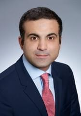

Alia Moubayed is an experienced economist, a policy practitioner and strategist with more than 25 years of experience in government, international financial institutions, financial markets and think-tanks. She assumed research, policy and management responsibilities in the design and implementation of economic and financial sector reforms covering the Middle East and North Africa (MENA) and other emerging markets.
She is currently Chief Economist for the MENA region at an investment bank based in London. Prior to that, she worked at the International Institute for Strategic Studies (IISS) in London (2017-18), where she directed the Geo-economics and Strategy Program (GESP) analysing the interplay between economics and geopolitics at the global and regional levels, and providing advice to government and private sector corporations. Alia also worked as Chief Economist for the MENA region at Barclays in London for more than 8 years (2008-2017). She joined Barclays from the World Bank which she integrated through the Young Professionals Program (YPP) and became a senior economist responsible for analytical research, policy dialogue and development policy lending to countries in Europe and Central Asia, as well as Indonesia (2002-2008). She was also a member of the Task Force for World Bank Engagement with the Arab World. Prior to that, she held policy responsibilities in various economic institutions in Lebanon (1994-2001), including: head of section at the research department at the Banque du Liban; advisor to the Minister of Economy and Trade and Minister of Industry; and finally Managing Director of the Economic and Social Fund for Development (ESFD) at the Council for Development and Reconstruction (CDR).
Alia holds a BA in Economics with distinction and an MBA from the American University of Beirut, as well as a Master equivalent in Public Policy and Public Administration from the Ecole Nationale d’Administration (ENA) in France. She has authored several publications and reports, and her commentary has featured in local, regional and international media outlets and on twitter. She is also the founder of AWEAMENA – the Association of Women in Economics Across the Middle East and North Africa aimed at promoting the role of women in economic policy making in the region.
Gerard is a Senior Adviser (Portfolio Manager) at a multi-billion family office. In his current role, Gerard focuses on multi-asset principal investing with an emphasis on investments in public and private equity. Prior to joining NNS Advisers, Gerard was an investment professional at Fidelity Investments, a leading asset manager, where he was focused on European financial services (including banks) and healthcare. Prior to joining Fidelity, Gerard was an associate at Apax Partners, a global private equity firm, where he was focused on financial and business services transactions globally. Gerard started his career in 2007 at Credit Suisse as an investment banking analyst focused on European mergers & acquisitions and emerging markets transactions.
Gerard holds an MBA from Harvard Business School (Baker Scholar, High Distinction), a MS of civil engineering from École Nationale des Ponts et Chaussées (ENPC) and École Supérieure d'Ingénieurs de Beyrouth (ESIB), and a MA in Project Finance - Structured Finance (ENPC-UPX).
Recent co-signed articles about the current Lebanese economic situation: